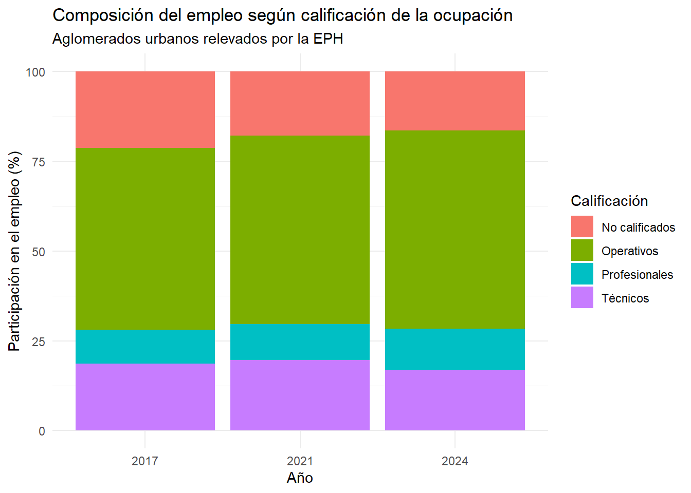
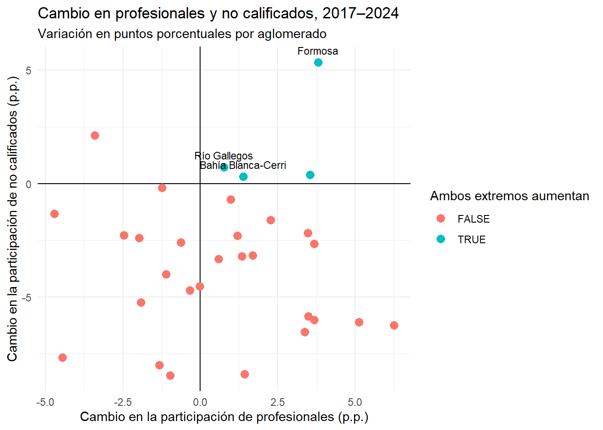
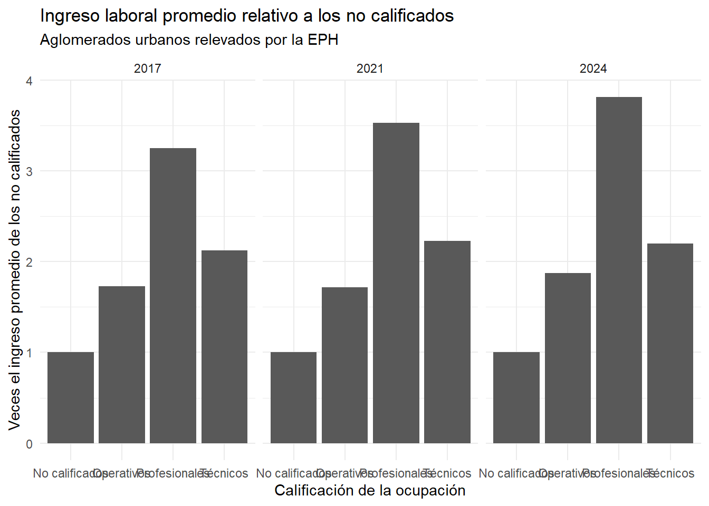

Polarización y estructura ocupacional del empleo en los aglomerados urbanos argentinos
Resumen ejecutivo
Este trabajo analiza la evolución de la estructura ocupacional del empleo en los aglomerados urbanos argentinos entre 2017 y 2024, utilizando los microdatos de la Encuesta Permanente de Hogares (EPH). El análisis clasifica a los ocupados según cuatro niveles de calificación: Profesionales, Técnicos, Operativos y No calificados, y estudia tanto la evolución agregada como las diferencias territoriales.
Los resultados no muestran un proceso de polarización ocupacional generalizado: la participación conjunta de los estratos intermedios pasó de 69,2% en 2017 a 72,0% en 2024. Sin embargo, se identifican diferencias entre aglomerados y cuatro casos, Bahía Blanca-Cerri, Gran Resistencia, Formosa y Río Gallegos, en los que aumentó simultáneamente la participación de Profesionales y No calificados, de acuerdo con la definición operativa adoptada.
El análisis complementario de ingresos muestra, además, diferencias persistentes entre los niveles de calificación ocupacional.
1. Introducción
El mercado laboral atraviesa transformaciones asociadas al cambio tecnológico. La literatura sobre cambio tecnológico y empleo ha identificado modificaciones en la composición de las tareas realizadas por los trabajadores y, en algunos contextos, un proceso de polarización ocupacional caracterizado por el crecimiento relativo de empleos ubicados en los extremos de la distribución y una reducción de los empleos de calificación intermedia (Autor et al., 2003; Goos & Manning, 2007). Sin embargo, en economías periféricas como la argentina, este fenómeno interactúa con una matriz productiva marcada por la heterogeneidad estructural y la informalidad (Apella & Zunino, 2017).
Este trabajo busca responder cómo evolucionó la composición del empleo según el nivel de calificación en los aglomerados urbanos relevados por la Encuesta Permanente de Hogares (EPH) entre 2017 y 2024, y qué diferencias territoriales se observan en estos patrones. El objetivo principal es caracterizar esta evolución a nivel agregado e identificar la heterogeneidad territorial en los aglomerados urbanos.
Hipótesis: La evolución de la estructura ocupacional según el nivel de calificación no fue homogénea entre los aglomerados urbanos, observándose diferencias territoriales en la magnitud y dirección de los cambios entre 2017 y 2024.
2. Desarrollo conceptual
2.1 Trabajo, calificación y estructura ocupacional
La calificación ocupacional no depende únicamente de la educación formal del trabajador, sino también de las características y complejidad de las tareas que demanda el puesto. El enfoque basado en tareas permite distinguir las ocupaciones según el tipo de actividades que realizan los trabajadores y analizar cómo el cambio tecnológico puede afectar de manera diferente a distintos tipos de tareas (Autor et al., 2003).
Para este trabajo se utiliza el Clasificador Nacional de Ocupaciones (CNO), que organiza las ocupaciones según distintos criterios, entre ellos su nivel de calificación. A partir de esta clasificación se identifican cuatro estratos: Profesionales, Técnicos, Operativos y No calificados (INDEC, 2011).
2.2 Polarización del empleo
La literatura sobre polarización ocupacional estudia procesos en los cuales aumenta la participación relativa de los empleos ubicados en los extremos de la distribución ocupacional, mientras que disminuye la participación de los empleos intermedios. Este patrón ha sido documentado, entre otros casos, para el mercado laboral británico por Goos y Manning (2007).
Uno de los mecanismos teóricos asociados a estos procesos es el Cambio Tecnológico Sesgado hacia la Rutina (RBTC, por sus siglas en inglés). Este enfoque plantea que determinadas tecnologías pueden sustituir tareas rutinarias, tanto cognitivas como manuales, mientras que pueden complementar tareas no rutinarias que requieren capacidades analíticas, resolución de problemas o interacción interpersonal (Autor et al., 2003).
Para este trabajo se adopta una definición operativa de polarización: se considera que un aglomerado presenta un patrón de polarización cuando aumenta simultáneamente la participación porcentual de los empleos de alta calificación, Profesionales, y de baja calificación, No calificados, entre 2017 y 2024.
Esta definición permite identificar específicamente los casos en los que se produce un aumento simultáneo de ambos extremos de la distribución ocupacional, diferenciando este proceso de otras modificaciones en la estructura del empleo.
2.3 Dimensión territorial
La estructura ocupacional puede presentar diferencias entre los distintos territorios. En este trabajo, la dimensión territorial se incorpora mediante el análisis de los aglomerados urbanos relevados por la EPH, con el objetivo de identificar diferencias en la evolución de la composición del empleo según el nivel de calificación.
El análisis territorial permite observar si los cambios identificados a nivel agregado se presentan de manera homogénea o si existen trayectorias diferenciadas entre los aglomerados. Esta dimensión resulta particularmente relevante en el contexto latinoamericano, donde las características de los mercados laborales pueden diferir entre países y territorios y modificar la forma en que se manifiestan las transformaciones tecnológicas (Weller et al., 2019).
2.4 Motivación tecnológica
El enfoque del Cambio Tecnológico Sesgado hacia la Rutina constituye uno de los principales marcos utilizados para analizar los efectos del cambio tecnológico sobre el empleo. La tecnología y la automatización pueden sustituir determinadas tareas rutinarias, mientras que otras tareas no rutinarias pueden presentar mayores posibilidades de complementariedad tecnológica (Autor et al., 2003).
En los últimos años, la incorporación de tecnologías de inteligencia artificial generativa amplió el debate sobre la relación entre tecnología y empleo. La evidencia reciente de la Organización Internacional del Trabajo señala que la exposición a la inteligencia artificial generativa depende de las tareas que componen las distintas ocupaciones y que el efecto más probable es la transformación de determinados puestos de trabajo, más que su sustitución completa (Gmyrek et al., 2025).
En este sentido, el enfoque basado en tareas constituye un marco conceptual útil para interpretar los cambios observados en la estructura ocupacional, aunque los resultados empíricos de este trabajo no permiten identificar directamente el efecto causal del cambio tecnológico.
3. Metodología
Para el desarrollo de este trabajo empírico se utilizaron los microdatos de la Encuesta Permanente de Hogares (EPH) provistos por el INDEC. Para reducir la incidencia de la estacionalidad, se seleccionó exclusivamente el cuarto trimestre de los años 2017, 2021 y 2024.
El universo de análisis se delimitó a la población ocupada de 18 a 65 años inclusive, descartando registros sin calificación ocupacional definida. Metodológicamente, se tomó la decisión de unificar la Ciudad Autónoma de Buenos Aires y los Partidos del Gran Buenos Aires en una única entidad analítica (“Gran Buenos Aires”), dado que conforman un mercado laboral metropolitano integrado por desplazamientos pendulares diarios.
La calificación ocupacional se determinó a partir del código correspondiente del Clasificador Nacional de Ocupaciones (CNO), identificando los cuatro estratos: Profesionales, Técnicos, Operativos y No calificados (INDEC, 2011).
Todos los cálculos de composición del empleo se realizaron utilizando el factor de expansión poblacional (PONDERA). La participación de cada estrato se obtuvo a partir de la cantidad de ocupados ponderada por dicho factor respecto del total de ocupados de la muestra analizada.
Para analizar las diferencias territoriales, se calcularon las participaciones de cada estrato de calificación para los aglomerados urbanos relevados por la EPH. Posteriormente, se comparó la variación en puntos porcentuales entre 2017 y 2024. Para identificar los casos que presentan un patrón de polarización según la definición adoptada, se verificó si la participación de Profesionales y No calificados aumentó simultáneamente durante el período.
Como dimensión complementaria, se analizó la relación entre la calificación ocupacional y los ingresos laborales. Para neutralizar la distorsión generada por la inflación nominal del período, se calculó el ingreso laboral promedio ponderado (P21 utilizando PONDIIO) y se expresó el ingreso de cada categoría como múltiplo del ingreso promedio de los trabajadores No calificados de cada año.
Cabe destacar una limitación metodológica fundamental vinculada al diseño de la EPH: en aglomerados de menor tamaño poblacional, la apertura de los datos por estrato de calificación reduce significativamente el tamaño de la muestra efectiva (N). Por lo tanto, las variaciones interanuales en estos territorios deben interpretarse con cautela, ya que pueden reflejar variabilidad muestral propia del diseño de la encuesta.
4. Resultados y análisis
4.1 Composición ocupacional por año
A nivel agregado, la estructura ocupacional de los aglomerados urbanos argentinos entre 2017 y 2024 muestra una relativa estabilidad. Los empleos de calificación intermedia, Técnicos y Operativos, mantienen un peso predominante a lo largo del período.
En 2017, los empleos Operativos representaban aproximadamente el 50,6% del empleo analizado, mientras que los Técnicos alcanzaban el 18,6%. Los Profesionales representaban el 9,4% y los No calificados el 21,3%.
En 2024, los Operativos aumentaron su participación hasta el 55,1%, mientras que los Técnicos representaron el 16,9%. Por su parte, los Profesionales alcanzaron el 11,5% y los No calificados el 16,5%.
Estos resultados muestran que, si bien se produjeron modificaciones en la composición interna de la estructura ocupacional, no se observa una transformación generalizada hacia una estructura concentrada en los extremos.
4.2 Cambio en la composición: ¿hay un patrón de polarización?
La evidencia agregada no muestra un proceso de polarización ocupacional generalizado durante el período analizado.
La participación conjunta de los empleos ubicados en los extremos de la distribución, Profesionales y No calificados, pasó de aproximadamente 30,8% en 2017 a 28,0% en 2024, mientras que los estratos intermedios pasaron de 69,2% a 72,0%.
Por lo tanto, bajo la definición operativa adoptada en este trabajo, aumento simultáneo de la participación de Profesionales y No calificados, no se observa un patrón de polarización a nivel agregado.
4.3 Diferencias territoriales
Si bien el resultado agregado no evidencia una polarización generalizada, el análisis por aglomerado muestra una importante heterogeneidad territorial.
Al aplicar la definición operativa de polarización, se identifican cuatro aglomerados en los que aumentó simultáneamente la participación de Profesionales y No calificados entre 2017 y 2024: Bahía Blanca Cerri, Gran Resistencia, Formosa y Río Gallegos.
Estos casos cumplen con el criterio establecido para identificar un patrón de polarización en este trabajo.
Sin embargo, los resultados no permiten atribuir estos cambios a mecanismos productivos específicos, dado que el análisis no incorpora variables que midan directamente la estructura productiva o de servicios de cada aglomerado.

4.4 Ingresos por nivel de calificación
El análisis de los ingresos laborales permite complementar el estudio de la estructura ocupacional incorporando una dimensión económica asociada a los distintos niveles de calificación.
Al expresar el ingreso laboral promedio de cada categoría como múltiplo del ingreso promedio de los trabajadores No calificados del mismo año, se observa una diferencia persistente entre los niveles de calificación.
En los tres años analizados, los trabajadores Profesionales presentan el mayor ingreso laboral promedio relativo, seguidos por Técnicos y Operativos.
En 2024, el ingreso promedio de los Operativos equivale aproximadamente a 1,88 veces el de los No calificados, el de los Técnicos a 2,20 veces y el de los Profesionales a 3,82 veces.

5. Conclusiones
Este trabajo se propuso analizar la evolución de la estructura ocupacional del empleo en los aglomerados urbanos de Argentina entre 2017 y 2024, con el objetivo de caracterizar los cambios en la composición del empleo según el nivel de calificación e identificar diferencias territoriales en estos patrones.
A nivel agregado, los resultados no muestran evidencia de un proceso de polarización ocupacional generalizado para el conjunto de los aglomerados urbanos analizados. Los estratos de calificación intermedia mantienen un peso predominante a lo largo del período. En particular, la participación conjunta de las ocupaciones Técnicas y Operativas pasó de 69,2% en 2017 a 72,0% en 2024.
Sin embargo, el análisis territorial muestra que el resultado agregado oculta trayectorias diferenciadas entre los aglomerados. Al aplicar la definición operativa adoptada en este trabajo, se identificaron cuatro casos en los que aumentó simultáneamente la participación de Profesionales y No calificados entre 2017 y 2024: Bahía Blanca Cerri, Gran Resistencia, Formosa y Río Gallegos.
Esta heterogeneidad territorial resulta consistente con la hipótesis planteada, en cuanto se observan diferencias en la evolución de la estructura ocupacional entre los distintos aglomerados. No obstante, dado que el análisis no incorpora variables directas sobre las características productivas y de servicios de cada territorio, no es posible atribuir los patrones observados a estos factores de manera causal.
Por otra parte, el análisis complementario de los ingresos laborales muestra que persisten diferencias de ingreso asociadas al nivel de calificación ocupacional. En los tres años analizados, los trabajadores Profesionales presentan los mayores ingresos laborales promedio relativos, seguidos por Técnicos y Operativos, mientras que los No calificados constituyen la categoría de referencia.
En suma, los resultados destacan la importancia de incorporar la dimensión territorial al estudio de la estructura ocupacional del mercado de trabajo argentino. La ausencia de una polarización generalizada a nivel agregado no implica una evolución uniforme entre los aglomerados, sino que coexisten trayectorias ocupacionales diferenciadas.
Como futuras líneas de investigación, resultaría pertinente incorporar variables directas sobre las ramas de actividad económica y la estructura productiva de cada aglomerado, con el objetivo de analizar en qué medida estas características contribuyen a explicar las diferencias observadas.
Bibliografía
Apella, I., & Zunino, G. (2017). Cambio tecnológico y el mercado de trabajo en Argentina y Uruguay: Un análisis desde el enfoque de tareas. Banco Mundial.
Autor, D. H., Levy, F., & Murnane, R. J. (2003). The skill content of recent technological change: An empirical exploration. The Quarterly Journal of Economics, 118(4), 1279–1333.
Gmyrek, P., Berg, J., Kamiński, K., Konopczyński, F., Ładna, A., Nafradi, B., Rosłaniec, K., & Troszyński, M. (2025). Inteligencia artificial generativa y empleo: Edición actualizada de 2025. Organización Internacional del Trabajo.
Goos, M., & Manning, A. (2007). Lousy and lovely jobs: The rising polarization of work in Britain. The Review of Economics and Statistics, 89(1), 118–133.
Instituto Nacional de Estadística y Censos [INDEC]. (2011). Clasificador Nacional de Ocupaciones (CNO 2011): Estructura, conceptos y definiciones. INDEC.
Weller, J., Gontero, S., & Campbell, S. (2019). Cambio tecnológico y empleo: Una perspectiva latinoamericana. Comisión Económica para América Latina y el Caribe (CEPAL).